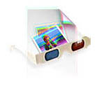
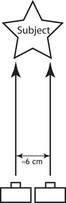
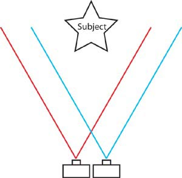
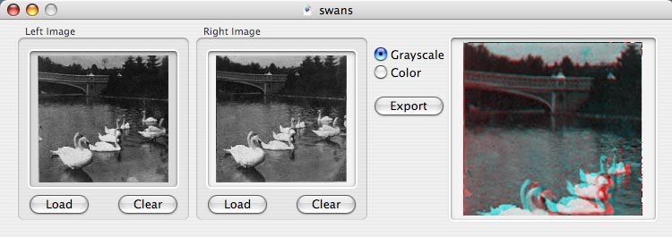
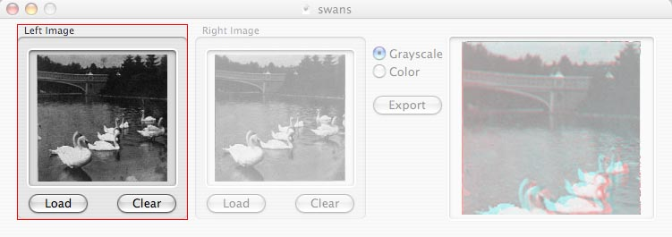
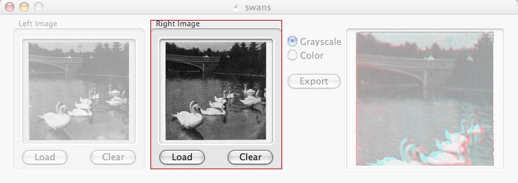
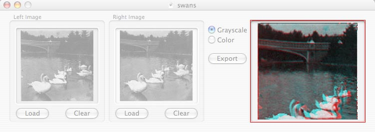
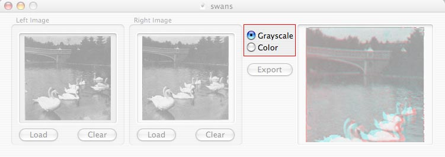
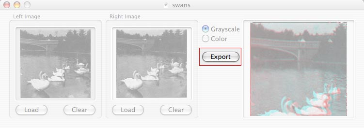
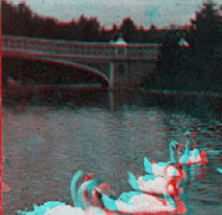

Anaglyph Maker Help

Introduction
Anaglyph Maker is a program for generating 3D (red/blue) stereograms. It requires two source images. These will generally be two images taken either simultaneously from two cameras located a few inches apart, or sequentially from one camera that is moved a few inches along a horizontal plane between shots. You can buy or make a special tripod mount that will allow you to move the camera horizontally between shots without otherwise alterning the angle of view, although this option only works with subjects that tend to stand still for fairly long periods of time.
The two source pictures (aka the "stereo pair") should be taken with the lenses parallel with each other. The correct distance to space the lenses will vary depending on the distance away from the subject, the focal length of the lense, and the amount of perceived "depth" desired. Generally, 4-6 centimeters is a good starting point, but you will probably need to experiment a little with your equipment.

The two cameras (or one camera used twice) act very much in the same way your eyes do. Each one captures a slightly different image because each camera has a slightly different angle of view, just like your eyes.

By superimposing the two images in a special way and filtering the resulting image through red and blue lenses so that the angle of view from only one camera reaches each eye, the illusion of depth is achieved.
There are many good resources on the web about creating anaglyphs, as well as sites that discuss the science behind them. You can also find resources to help you to combine two cameras to create a single anaglyphic cameras, to help you make a camera slide, or to help you find a place to buy special cameras and equipment specifically designed for taking stereo pair images. Here are a few resources I have found helpful while creating Anaglyph Maker, but this is in no ways an exhaustive list:
Online Resources
A trip mount for taking stereo pairs
Information on building a camera slide
A general informational site, including charts for calculating how far apart your cameras should be
A collection of links related to anaglyphs
Using Anaglyph Maker
Making the source images is the hard part. Once you've got those, creating an anaglyph is easy. There are a couple of limitations, however. The two source images must be the same size, and must both be RGB or both grayscale in order for the conversion to work correctly.

Anaglyph Maker has a fairly straightforward interface.
The left image, which is the picture taken by the left camera, or the camera when it was in the leftmost position, should be loaded into the "Left Image" image well.

You can load the image well by dragging an image from another program, dragging the icon of an image file from the Finder, or by pressing the "Load" button and selecting the file when prompted. Repeat the procedure for the "Right Image" image well.

If you accidentally load the wrong image into either well, simply load another image, or press the "Clear" button.
Once you have loaded both image wells, a small preview of the final image will appear.

By default, Anaglyph Maker will generate a grayscale anaglyph, even if the source images are color. This is done because, with most pictures, the stereo affect is more pronounced and the image clearer when creating a grayscale anaglyph. If you would like to create a color anaglyph, you can click the conversion mode radio button labled "Color":

The algorithm used to create a color anaglyph in Anaglyph Maker is a more complex and resource demanding algorithm than the one used in most programs, but results in brighter, sharper color images than using the traditional algorithm. Because of this, you may notice a delay after clicking the "Color" radio button. Future releases of Anaglyph Builder will move this process to a separate thread, but for now, Anaglyph Maker may be a little unresponsive while generating the Color Anaglyph.
When satisfied with the preview, you can export the final image. Even though the preview is small, the exported final image will be the same size as the original stereo pair. To export the final image at full size, click the "Export" button to the left of the "Final Image" image well:

You will be prompted for the location and filename to save. Open the image in another program, and you have your final, full-size anaglyph ready to be viewed with a pair of red-blue or red-cyan 3-D glasses:

Currently, Anaglyph Maker supports only the export of TIFF images; future versions will likely support other file formats. Preview, the image viewer that comes with Mac OS X can convert the TIFF image to other formats you may need.
If you wish, you can save your stereo pair in an Anaglyph Maker document by selecting "Save..." from the File menu. You will later be able to load the stereo pair back in by double-clicking on the Anaglyph Maker document or by selecting "Open..." from the File menu.
3D Glasses for Viewing Anaglyphs
There are a number of places where you can get red-blue or red-cyan 3D glasses. Here are a few sources for you:
Rainbow Symphony has a large selection of disposable and permanent glasses, and will give you a free pair to try out for the price of postage. You can buy a large quantity of paper 3-D glasses for a reasonable amount. I have purchased from them and found them to be responsive and fairly priced.
Space Kids will also send you a free pair of glasses.
3D Glasses.net is another source for buying the glasses.
Stereoscopy also has several models.
For the truly intrepid, the United States Geological Service has instructions on making your own glasses. Note: the glasses aren't that hard to make, but the do take a little time, and you have to make sure that the red and blue cellophane you have is very clear. I tried with blue and red craft cellophane and found the results less than acceptable.
Good Luck!
That's about all there is to it. Good luck and have fun, and if you find any bugs, have any problems, or want to leave a comment, please feel free to e-mail me.